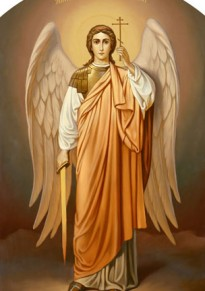

21 листопада християни відзначають день Архистратига Михаїла та інших Небесних Сил безтілесних. Архистратиг Михаїл, ім’я якого означає «хто, як Бог?» Або «хто рівний Богові?» є вождем Небесних сил, тому і називається архистратигом, тобто воєначальником сил Господніх. Коли одержимий гордістю Денниця повстав проти Бога й потягнув за собою безліч інших духів, тоді святий архистратиг Михайло явився захисником Божої слави, закликав інших ангелів повстати проти зла і перебувати в покорі Господу. У церковних співах він оспівується як «ангельських ликів чиноначальник», «Трисонячного Божества повстанець». Сьогоднішнє свято носить назву собору, тому що в цей день прославляються всі безплотні сили Небесні.
Це свято – головне з усіх свят на честь святих ангелів. У просторіччі він іменується Михайловим днем і дуже шанується віруючими людьми. Собор – возз’єднання, спільнота всіх святих ангелів на чолі з Михаїлом Архистратигом, які все разом і одноголосно славлять Святу Трійцю, одностайно служать Богові. Архистратиг Михаїл – вождь Небесних Сил, на іконах його зображують у грізному і войовничому вигляді: на голові шолом, у руці – меч або спис. Під ногами – уражений ним дракон. З ким же воює цей відважний ватажок? Ми знаємо, що весь ангельський світ, створений ще до створення людини і всього видимого світу, був наділений великими досконалостями і дарами. Ангели, подібно до людей, мали вільну волю. Вони могли зловживати цією свободою волі і впасти в гріх. Це і відбулося з одним з верховних ангелів – Денницею, який відкрив у собі джерело зла і гордості і повстав проти свого Творця. Духовний світ похитнувся і частина ангелів пішла за Денницею. У цей момент з ангельської спільноти виступив Архистратиг Михаїл і вимовив: «Ніхто як Бог!», – Звертаючись з цим закликом до всіх ангелів. Цими словами він показав, що визнає тільки одного Єдиного Бога, Творця і Володаря усього всесвіту. Боротьба була важкою, бо Денниця був наділений великими достоїнствами. Але сили добра перемогли, і Денниця був скинутий з неба з усіма своїми послідовниками. А Архангел Михаїл утвердився як вождь усього ангельського світу, вірного Богові.
З тих пір в руках Архістратига меч, тому що сатана, скинутий з неба, не заспокоюється. Впалим ангелам не дозволено проникати до вищих областей світобудови і тому всю свою лють вони спрямували на людей, і в першу чергу на віруючих в Бога. Михаїл не перестає воювати з ангелами зла і темряви, захищаючи вірних чад Божих від їх підступів. І ми повинні радіти, що маємо такого відважного захисника – переможного вождя Небесних Сил. Потрібно пам’ятати, що його охоронний меч буде завжди за нас, якщо тільки ми не вступимо в союз з тим, з ким бореться Архістратиг Михаїл. Янголи, що залишилися вірними своєму Творцеві і які склали воїнство Архістратига Михаїла, настільки утвердилися у добрі, що гріх для них став неможливим. Не тому, що вони, маючи вільну волю, не можуть переступити волі Божої, а просто тому, що вони не хочуть цього робити, не хочуть грішити. Не захотіти грішити – значить отримати можливість наблизитися до Бога і бачити Його, як бачать Його ангели. Служити Йому, виконуючи Його веління.
Історія святкування Собору Архистратига Михаїла та інших Небесних Сил безтілесних така: ще в апостольські часи було поширене хибне вчення про Ангелів. Серед християн з’явилися єретики, які поклонялися Янголам як богам і вчили, що видимий світ створений не Богом, а Ангелами, вважаючи їх вище Христа. Це вчення було настільки небезпечним, що святі отці були змушені скликати в Лаодикії помісний собор (IV століття), на якому було засуджено поклоніння янголам і встановлено благочестиве шанування Ангелів як служителів Божих, охоронців людського роду, і наказали святкувати Собор Архістратига Михаїла та інших Небесних Сил 8 листопада за старим стилем (21 листопада – за новим). Дата святкування вибрана не випадково. Листопад – це 9-й місяць після березня, який вважається першим місяцем після створення світу. На відзначення 9-ти ангельських чинів саме в листопаді – 9-му місяці – встановлено свято Янголів. 8-е число вказує на день Страшного Суду, в якому безпосередню участь візьмуть Янголи. Саме вони будуть свідчити на суді про наше життя і справи – праведні або неправедні. День Страшного Суду святі отці називають восьмим днем. Час вимірюється тижнями (седмицями). 8-м днем буде останній днем миру, днем Страшного Суду.
Джерело : http://blyzhchedoboga.com.ua/sobor-arhistratiga-mihayila/